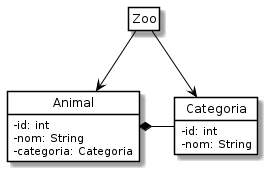

El Zoo persistent¶
A continuació veurem un exemple de com fer les operacions més habituals amb bases de dades. En concret veurem com podem crear i eliminar taules, i consultar, afegir, modificar i eliminar-hi registres.
El context escollit és un zoo on hi haurà animals categoritzats.
El model de dades¶
Aquest és model de dades que farem servir:

Diagrama de classes¶
En aquest model de dades distingim els següents elements:
la classe
AnimalÉs tracta de la classe que defineix els objectes que manipularem a la nostra demostració.
Disposa de dos camps: el
nomi lacategoriaA banda, inclou un identificador de base de dades. Serà un valor que generarà el nostre SGBD i que ens permetrà vincular les instàncies de
Animalamb la taula corresponent.la classe
CategoriaUna classe molt bàsica que ens permetrà veure el concepte de clau forana (foreign key)
A banda de guardar l’identificador a la base de dades, només disposa d’un nom.
la classe
ZooUna classe contenidor que simplement realitzarà accessos a la base de dades.
A banda, disposarem de la classe UsaZoo que ens permetrà provar tot el
conjunt.
Connexió i desconnexió¶
Comencem amb una implementació parcial de la classe Zoo, de manera que
ens permeti connectar-nos a la base de dades, i desconnectar-nos
posteriorment.
La classe Zoo, en aquesta primera versió, tindria el següent aspecte:
1 2 3 4 5 6 7 8 9 10 11 12 13 14 15 16 17 18 19 | import java.sql.DriverManager;
import java.sql.Connection;
import java.sql.SQLException;
public class Zoo {
private static final String NOM_BASE_DE_DADES = "animals.bd";
private static final String CADENA_DE_CONNEXIO = "jdbc:sqlite:" +
NOM_BASE_DE_DADES;
private Connection conn = null;
public void connecta() throws SQLException {
if (conn != null) return; // ja connectat
conn = DriverManager.getConnection(CADENA_DE_CONNEXIO);
}
public void desconnecta() throws SQLException {
if (conn == null) return; // ja desconnectat
conn.close();
}
}
|
Com podem veure, només disposem dels mètodes de connexió i desconnexió. Abans de connectar, se n’assegura que no hi hagi ja una connexió. Abans de desconnectar, comprova que hi hagi connexió.
No es gestiona cap excepció. Si apareixen, les haurà de gestionar el codi que faci servir aquests mètodes.
Els dos mètodes poden generar l’excepció SQLException que és de tipus
gestionat i, per tant, ens caldrà tractar-la. Per simplicitat, els nostres
mètodes la deixaran passar anunciant-la amb throws.
Un possible codi usuari seria:
1 2 3 4 5 6 7 8 9 10 11 12 13 14 | import java.sql.SQLException;
public class UsaZoo {
public static void main( String args[]) throws SQLException {
Zoo zoo = new Zoo();
System.out.print("Primer connectem amb la base de dades: ");
zoo.connecta();
System.out.println("connectat");
System.out.print("Finalment tanquem la connexió amb la base de dades: ");
zoo.desconnecta();
System.out.println("desconnectat");
}
}
|
Fixa’t que main() tampoc no gestiona l’excepció SQLException.
Recorda que aquest és un programa d’exemple. En condicions normals sí
hauríem de fer alguna cosa més que simplement acceptar que es trenqui
l’execució.
En llençar l’execució, ens trobem:
$ java UsaZoo
Primer connectem amb la base de dades: connectat
Finalment tanquem la connexió amb la base de dades: desconnectat
$ du animals.bd
0 animals.bd
És a dir, la connexió i desconnexió han funcionat i ens ha creat un fitxer amb la base de dades, de moment buit.
La classe Categoria¶
Comencem amb la implementació de les categories.
La implementació de la classe Categoria que farem servir serà la
següent:
1 2 3 4 5 6 7 8 9 10 11 12 13 14 15 16 17 18 19 20 21 22 23 24 25 26 27 28 29 30 31 32 33 34 35 | public class Categoria {
private int id = -1; // -1 indica no assignat/indefinit
private String nom;
public Categoria(String nom) {
if (nom == null || nom.isBlank()) {
throw new IllegalArgumentException("El nom no pot ser null ni blanc");
}
this.nom = nom;
}
public Categoria(int id, String nom) {
this(nom);
if (id < 0) {
throw new IllegalArgumentException("L'identificador ha de ser positiu");
}
this.id = id;
}
public boolean idIndefinit() { return id < 0; }
public int getId() {
if (idIndefinit()) {
throw new UnsupportedOperationException("L'identificador no està disponible");
}
return id;
}
public String getNom() { return nom; }
@Override
public String toString() {
return "Categoria(id:" +
(id < 0 ? "indefinit" : id) +
", " + nom + ")";
}
}
|
Aquesta classe ofereix dues maneres de construir instàncies: amb o sense
identificador. Quan la instància és creada al nostre programa, no disposem
d’identificador de la base de dades, clar, encara no hi ha estat inserida!
En canvi, quan creem la instància a partir de les dades d’un registre de
la base de dades, sí que sabem el seu id.
El mètode toString() mostrarà com a indefinit l’identificador de les
instàncies que no en disposin.
El mètode idIndefinit() ens permet saber si l’identificador ha estat o
no definit en crear la categoria. En fer-ho d’aquesta manera, ens permetrà
que els usuaris de Categoria no hagin de saber que internament fem
servir el -1 per indicar que està indefinit l’identificador.
El mètode getId() ens permet obtenir l’identificador de la base de
dades sempre i quant aquest estigui definit. Altrament llençarà una
excepció.
La taula CATEGORIES¶
La taula en la que emmagatzemarem la informació de les instàncies de
Categoria es dirà CATEGORIES i tindrà la següent definició:
CREATE TABLE CATEGORIES (
id INTEGER PRIMARY KEY AUTOINCREMENT,
nom VARCHAR(40)
)
A mencionar que l’identificador serà calculat pel SGBD gràcies a AUTOINCREMENT.
Codi de creació de la taula¶
Tot i que podríem crear aquesta taula directament al SGBD, ho farem a partir d’un programa en Java.
El codi que afegim a la classe Zoo per crear la taula és el següent:
1 2 3 4 5 6 7 8 9 10 11 12 13 14 | public void creaTaulaCategories() throws SQLException {
String sql = "CREATE TABLE CATEGORIES (" +
" id INTEGER PRIMARY KEY AUTOINCREMENT," +
" nom VARCHAR(40))";
Statement st = null;
try {
st = conn.createStatement();
st.executeUpdate(sql);
} finally {
if (st != null) {
st.close();
}
}
}
|
El més important d’aquest codi és que li demanem a la instància de la
connexió a la base de dades conn un Statement. Es tracta d’un
objecte que ens permetrà enviar-li al SGBD les comandes SQL.
En aquest cas, el que volem és que executi la comanda de modificació que
tenim a la variable sql. Per fer-ho, li ho demanem a st fent
servir el mètode executeUpdate().
Tant l’obtenció del Statement com el seu ús poden generar
SQLException i, per tant, el nostre mètode ha de gestionar-la.
Cridarem aquesta funció des de UsaZoo:
1 2 3 4 5 6 7 8 9 10 11 12 13 14 15 16 17 | import java.sql.SQLException;
public class UsaZoo {
public static void main( String args[]) throws SQLException {
Zoo zoo = new Zoo();
System.out.print("Primer connectem amb la base de dades: ");
zoo.connecta();
System.out.println("connectat");
System.out.println("Creem la taula CATEGORIES");
zoo.creaTaulaCategories();
System.out.print("Finalment tanquem la connexió amb la base de dades: ");
zoo.desconnecta();
System.out.println("desconnectat");
}
}
|
La sortida de UsaZoo serà:
$ java UsaZoo
Primer connectem amb la base de dades: connectat
Creem la taula CATEGORIES
Finalment tanquem la connexió amb la base de dades: desconnectat
És a dir, teòricament ens ha creat la taula CATEGORIES. Comprovem-lo amb:
$ sqlite3 animals.bd ".schema CATEGORIES"
CREATE TABLE CATEGORIES ( id INTEGER PRIMARY KEY AUTOINCREMENT, nom VARCHAR(40));
$ du -h animals.bd
12K animals.bd
Malgrat ens està ocupant 12K per una taula buida, podem concloure que sí ens l’ha creada.
Eliminació de la taula¶
Què passaria si tornéssim a executar UsaZoo?
Provem-ho!
1 2 3 4 5 6 7 8 9 10 11 12 | $ java UsaZoo
Primer connectem amb la base de dades: connectat
Creem la taula CATEGORIES
Exception in thread "main" org.sqlite.SQLiteException: [SQLITE_ERROR] SQL error or missing database (table CATEGORIES already exists)
at org.sqlite.core.DB.newSQLException(DB.java:1012)
at org.sqlite.core.DB.newSQLException(DB.java:1024)
at org.sqlite.core.DB.throwex(DB.java:989)
at org.sqlite.core.NativeDB._exec_utf8(Native Method)
at org.sqlite.core.NativeDB._exec(NativeDB.java:94)
at org.sqlite.jdbc3.JDBC3Statement.executeUpdate(JDBC3Statement.java:102)
at Zoo.creaTaulaCategories(Zoo.java:28)
at UsaZoo.main(UsaZoo.java:11)
|
Ops! Què ha passat? Si tot anava tant bé?
El missatge és prou explícit: la taula CATEGORIES ja existeix
És clar, estem intentant crear una taula que ja existeix. Tenim diferents opcions per resoldre aquest problema.
L’opció més radical probablement és simplement eliminar el fitxer
animals.bd! Explorem d’altres opcions, eh?
Una de les opcions seria eliminar la taula abans de
crear-la. La sentència SQL seria DROP TABLE CATEGORIES. Aquesta
sentència l’executaríem amb el mateix mètode que fem servir per crear la
taula: Statement.executeUpdate()
El problema és que si executem aquesta comanda quan encara no hi és la taula, també ens petarà l’execució.
Per evitar-ho, afegirem el condicional IF EXISTS a la sentència SQL,
amb el que quedarà:
DROP TABLE IF EXISTS CATEGORIES;
Una altra opció seria transformar la sentència SQL de
creaTaulaCategories() per CREATE TABLE IF NOT EXISTS CATEGORIES….
De fet, seria el més normal doncs no voldrem crear una taula nova cada
cop!
Afegir una categoria¶
Ara que ja tenim la taula CATEGORIES, hi podem afegir categories.
La sentència SQL seria quelcom similar a:
INSERT INTO CATEGORIES (nom) VALUES ('ocell');
Aquí 'ocell' és el nom de la categoria que volem crear. El seu
identificador ens el crearà SQLite.
Una primera aproximació del mètode que ens inserirà una categoria en la base de dades podria ser:
1 2 3 4 5 6 7 8 9 10 11 12 13 14 | public void afegeixCategoria(Categoria categoria) throws SQLException {
String sql = String.format(
"INSERT INTO CATEGORIES (nom) VALUES ('%s')",
categoria.getNom());
Statement st = null;
try {
st = conn.createStatement();
st.executeUpdate(sql);
} finally {
if (st != null) {
st.close();
}
}
}
|
Malgrat la seva senzillesa, aquest mètode és realment important doncs és el responsable de convertir instàncies a registres a la base de dades.
Per cridar-lo, només ens cal disposar d’una instància de Categoria
Categoria ocell = new Categoria("ocell");
zoo.afegeixCategoria(ocell);
Un cop executat, la taula CATEGORIES disposarà d’un nou registre:
$ sqlite3 animals.bd 'select * from categories'
1|ocell
Fa bona pinta, no trobes?
Fixa’t que el SGBD ens ha generat l’identificador 1 de manera
automàtica.
Recuperar les categories¶
Un cop sabem com guardar instàncies a una base de dades, comença a ser hora de que aprenguem a fer l’operació contraria, recuperar-les.
Com sabem, les bases de dades relacionals ens permeten consultar les dades de les taules amb una sentència especial que solem anomenar consulta, query o select.
Per exemple, podem obtenir totes les categories ordenades per nom amb la query:
SELECT * FROM CATEGORIES ORDER BY nom;
Com es veurà això des de Java?
Implementem el mètode Zoo.recuperaCategories() que ens retorni la
llista de categories trobades a la taula CATEGORIES:
1 2 3 4 5 6 7 8 9 10 11 12 13 14 15 16 17 18 19 20 21 | public List<Categoria> recuperaCategories() throws SQLException {
String sql = "SELECT * FROM CATEGORIES ORDER BY nom";
Statement st = null;
try {
st = conn.createStatement();
ResultSet rs = st.executeQuery(sql);
List<Categoria> categories = new LinkedList<>();
while (rs.next()) {
int bdId = rs.getInt("id");
String nom = rs.getString("nom");
Categoria categoria = new Categoria(bdId, nom);
categories.add(categoria);
}
rs.close();
return categories;
} finally {
if (st != null) {
st.close();
}
}
}
|
El codi presenta les següents particularitats:
Fa servir la classe
ResultSetque encapsula, com bé indica el seu nom, el conjunt de resultats obtinguts a partir d’una consulta.En comptes de
executeUpdate()ara femexecuteQuery(). És el mètode específic de JDBC quan el que volem és executar una consulta. En fer-ho, ens retornarà unResultSet.Per poder mostrar els valors recuperats, hem d’anar recorrent els diferents valors del
ResultSet.ResultSettambé es sol conèixer com a cursor donat que funciona com un cursor o índex a una llista.El primer cop que cridem al mètode
next(), el cursor es col·loca al primer resultat. A mida que anem fent crides anext()el cursor va passant al següent resultat disponible fins arribar al darrer; moment en que retornaràfalse.El resultat que hi ha al cursor es pot accedir directament a partir de la variable
rs. Fixa’t com obté el primer camp que esperem que sigui enter doncs és l’identificador, i el segon, de tipus String, doncs és el nom.Per cada resultat, el codi crea una nova instància de
Categoriaamb els valors d’identificador i nom trobats, i l’afegeix a la llista de categories trobades, que retornarem finalment si no hi ha cap problema.Aquí és on es produeix la màgia de la conversió de registre de la base de dades a instància!
Ara les categories són creades amb un identificador real, afegit pel SGBD al camp d’autoincrement.
Fixa’t que finalment tanquem el
ResultSet.És una bona pràctica tancar-lo quan ja no el necessitem. Pensa que el resultat pot ser un nombre realment gran de registres i que, per qüestions pràctiques, sovint el SGBD no ens els enviarà tots de cop.
Si ja sabem que no ens cal més, en tancar el
ResultSetestem dient-li al SGBD que no cal que continuï mantenint els recursos associats a aquest.En aquest exemple concret, però, no és tan important, doncs de seguida tancarem el
Statementamb el que quedaran tancats tots elsResultSetoberts.
Per cert, ens caldrà afegir l’import de java.sql.ResultSet.
Què passa amb els animals?¶
Ara ja sabem consultar i afegir instàncies d’una classe bàsica en una base de dades.
Què ens pot faltar? Doncs quan tenim relacions entre classes o/i taules, ens toca treballar una mica més.

La classe Animal està relacionada amb Categoria per composició:
animal té categoria.
La relació entre taules i classes no sempre és una-a-una.
És prou freqüent que una classe es tradueixi en més d’una taula i que una
taula contingui dades que pertanyen a més d’una classe. Tot i que el nostre
exemple dels animals si que tindrem una taula per classe i una classe per
taula, ens permetrà tenir una idea de com funciona gràcies a la relació
entre Animal i Categoria o, si vols, entre ANIMALS i
CATEGORIES.
Emmagatzemarem els valors que composen les instàncies de Animal a la
taula ANIMALS que podem definir de la següent manera:
CREATE TABLE ANIMALS (
id INTEGER PRIMARY KEY AUTOINCREMENT,
nom TEXT,
categoria INTEGER,
FOREIGN KEY(categoria) REFERENCES CATEGORIES(id)
)
No hi ha gaire misteri en aquesta definició de taula, oi? És molt similar a CATEGORIES però com que els animals han de pertànyer a una categoria, representarem la relació amb una clau forana a la taula CATEGORIES.
La integritat referencial ens permet garantir coses com que no podrem afegir un animal d’una categoria inexistent, o que no podrem crear la taula ANIMALS si no disposem abans de CATEGORIES.
Cal tenir present que sqlite3 no inclou integritat referencial per
defecte. Això vol dir, per exemple, que podríem assignar una referència a
una categoria inexistent per un animal, o fins i tot crear la taula
ANIMALS sense que existís CATEGORIES.
Si bé les versions més actuals de squlite suporten la integritat
referencial, no ho fan per defecte ni el suport està del tot resolt amb
el controlador per Java.
Si vols, pots experimentar amb els exercicis tot connectant a la base de fent servir la següent cadena de connexió:
private static final String CADENA_DE_CONNEXIO = "jdbc:sqlite:" +
NOM_BASE_DE_DADES +
"?integrity_check&foreign_key_check";
Tingues present, però, que en la versió actual algunes de les operacions no t’avisaran si es produeix un error i fallaran silenciosament. És possible que la situació es solucioni en futures versions. Tenint en comptes que és programari lliure, potser t’animes a fer-ho tu!
Pels exercicis que farem en aquest curs, suposarem que sí hi ha integritat referencial i interaccionarem amb la base de dades de la manera correcta.
 Exercici 06_05. Creació i destrucció de la taula ANIMALS
Exercici 06_05. Creació i destrucció de la taula ANIMALS
Modificar registres¶
Ara ja sabem inserir i consultar registres en taules. Aquestes dues operacions formen part del que s’anomena CRUD (Create, Read, Update i Delete)
“C”: hem creat registres a la base de dades
“R”: hem llegit (read) o també fet consultes a la base de dades
En aquesta ocasió atacarem la “U” que correspon a Update o modificació al nostre idioma.
Modificar una categoria és fàcil doncs no depen de cap altre taula.
La sentència SQL per modificar la categoria peix a peixos seria:
UPDATE CATEGORIES SET nom = 'peixos' WHERE nom = 'peix';
Al nostre programa només hem d’executar-ho amb un executeUpdate() que
ens retornarà el nombre de registres que resulten modificats.
Un mètode que hagués de modificar el registre corresponent a una instància
de Categoria hauria de considerar els següents casos:
cas que la categoria no estigui a la base de dades
Aquest cas seria un error doncs no es pot modificar una cosa que encara no hi és. Es podria procedir de diferents maneres, com ara generant una excepció o simplement ignorant i no fent res.
En molts casos, el que es persegueix és l’operació modifica si existeix i sinó insereix. És a dir, si el registre hi és, el modifica i sinó l’afegeix. Aquesta operació és tan comuna que fins i tot està recollida com a upsert
cas que la categoria sí estigui a la base de dades, s’executa la sentència UPDATE amb la condició WHERE exigint que s’apliqui només al registre que coincideixi amb l’identificador de la categoria.
Per modificar un animal la situació és una mica més complexa doncs hem de garantir també que la nova categoria hi sigui a la base de dades. En tot cas, res molt més difícil del que ja hem sabut resoldre.
Eliminació de registres¶
Així com afegir, consultar i modificar animals ens ha resultat més difícil que fer-ho amb categories, la situació s’inverteix quan toca eliminar.
L’eliminació d’un animal és molt fàcil. En
tenim prou amb el seu id i executar la sentència SQL DELETE FROM ANIMALS WHERE id = 5.
Per descomptat, si l’animal no es troba a la base de dades haurem de generar un error o bé ignorar el cas.
Eliminar una categoria és una mica més problemàtic. Normalment cal crear ANIMALS tot indicant què ha de fer el SGBD quan s’elimina la clau forana. Sovint això es fa amb ON DELETE CASCADE. Tenint en compte que sqlite no ens ofereix gaire suport a la integritat referencial, ens tocarà també implementar-ho si volem aquest comportament.
Una manera d’eliminar els animals en cascada, seria definir un mètode que retorni la llista de tots els animals d’una categoria i anar-los eliminant un a un.
Potser més fàcil encara seria executar dues sentències. Per exemple, suposant que la categoria a eliminar té com a identificador el 5, ens caldria executar les següents sentències:
DELETE FROM ANIMALS WHERE categoria = 6;
DELETE FROM CATEGORIES WHERE id = 6;
Conclusions¶
Hem arribat al final d’aquest recorregut per la persistència des de la POO. Has vist com hem salvat el salt entre els objectes i les taules d’una manera molt explícita.
Hem treballat les operacions bàsiques anomenades sovint com CRUD: creació, lectura, modificació i eliminació.
És molt probable que quan desenvolupis et trobis amb biblioteques que ja et facin aquestes traduccions per tu. En tot cas, és important que entenguis que el que fan no és màgia i que tu ho pots també programar, en cas de necessitar-ho.